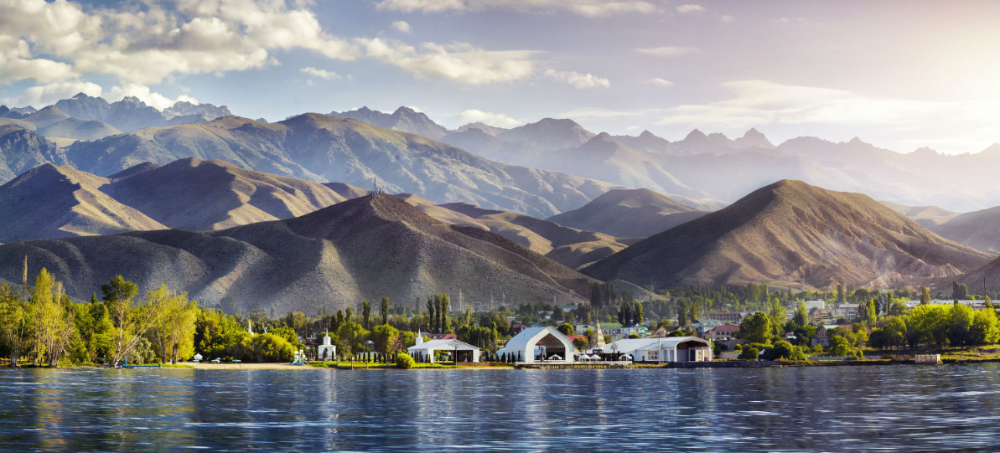

I am from sunny Central Asian Country Kyrgyzstan. This beautiful land with untouched nature
borders with Kazahstan from North, China from South, Uzbekistan from East and Russia from West.
Our ancestors were nomadic tribes who chose the greatest pasturelands during summer and more down
mountain valleys during winter. The warrior spirit of Kyrgyz people definetely comes from our ancestors
who were not afraid of their invadors and foght till the last drop of their blood.
Eagle Hunters
Kyrgyz Stuntmen
North Rural area
Snow Leopard
Since we are landlocked country, most of the income we get from agriculture and rapidly growing
textile industry. Another resource which is contributing greatly to the country's GDP - Gold Mining
Industry run by international company. Having a beautiful and untouched nature is giving us a big opportunity
to develop the Tourism. With today's technology there are more chances to spread information about the tourism
in our country.
Stunning Nature
 Our Pearl Lake Issyk-Kul
Ala-Too Square
The White House
The culture of Kyrgyz people is given from generation to generation. We do value family and realtive bonds.
There are more than 5 national holidays where we celebrate them wearing our traditional clothes, cooking traditional foods
and taking off days. There is nothing better than gathering with all family and relative members and share the happiness.
Folk Dance Group
National Wedding Dresses
Traditional Cuisine
Guest Table
Treasures of my Life
Last but not least, meaning of my life, My Family. My mom, my love and my little two chipmunks are
those who make my smile wider, my life happier. The rest is in the following video: